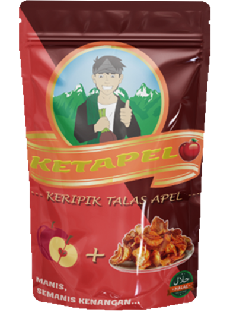
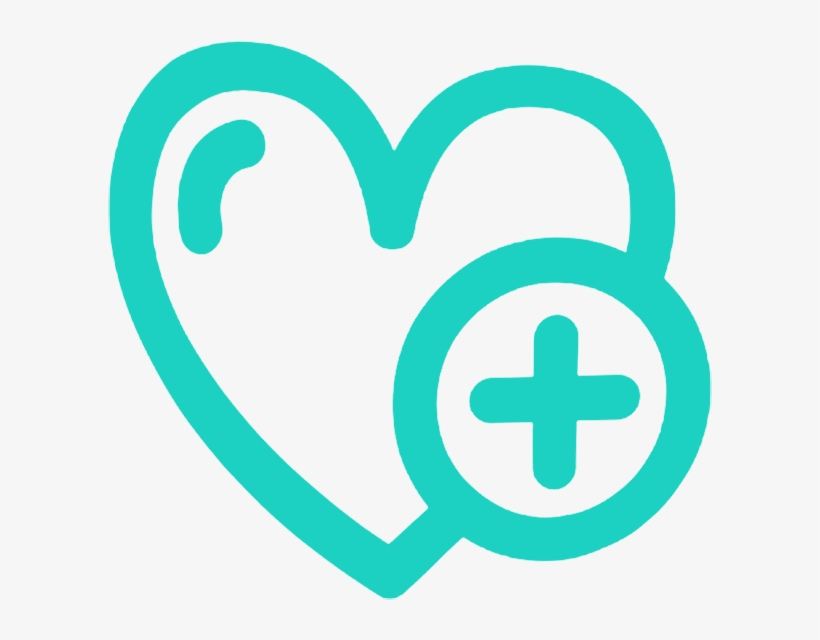
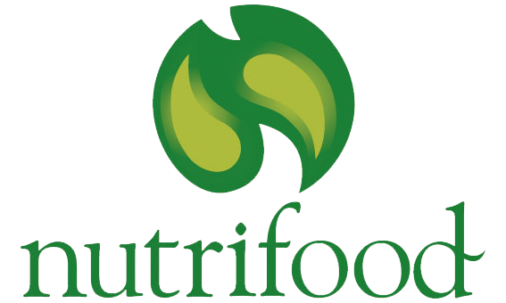

Sumber Energi
Menghasilkan kalori yang berasal dari karbohidrat meskipun sangat rendah lemak dan protein.
Kesehatan Kulit dan Rambut
Mengandung vit A, E, dan B6. Vitamin ini berfungsi untuk memperbaiki sel kulit. Antioksidan yang terkandung dalam talas juga mampu untuk mencegah penuaan dini. Fungsi dari vit B6 sendiri adalah memperbaiki jaringan.
Sebagai Penguat Sistem Kekebalan Tubuh
Mengandung vit B6 dan vit C untuk membantu produksi sel darah merah dan sel darah putih, yang berfungsi untuk menjaga kekebalan tubuh.
Baik Bagi Penderita Diabetes
Talas mampu mengatur kadar insulin dan glukosa dalam butuh, yang merupakan faktor penting untuk mencegah perkembangan penyakit diabetes. Jika kita rutin mengonsumsi talas diiringi dengan diet yang sehat, kita dapat menurunkan risiko terhadap penyakit diabetes karena talas termasuk ke dalam serat yang baik untuk dikonsumsi.
Mengapa Harus Ketapel
Karena Keripik ini menggunakan bahan pembuatan yang aman dan sehat, dan tentunya ga kalah hitsnya dengan makanan terkini.
Sumber Energi
Menambahkan energi karena, talas merupakan pengganti nasi.
Baik Untuk Pencernaan
Terdapat sekitar 11% dari kebutuhan serat makanan setiap hari yang akan berguna untuk peningkatan bertahap gula darah.
Sehat Untuk Jantung
Memberikan mineral seperti seng, magnesium, tembaga, besi dan mangan serta potasium yang baik dan sangat berguna untuk membantu mengatur detak jantung.

Membantu Tekanan Darah
Mengandung zat kalium yang berguna untuk membantu mengatur tekanan darah.
Meningkatkan Imun Tubuh
Salah satu zat yang terkandung dari umbi talas yaitu vit C dan antioksidan yang bermanfaat untuk menjaga sistem imun pada tubuh.
Mengatasi Kelelahan
Zat lainnya yang sangat dibutuhkan yaitu glikemik yang berfungsi untuk mengatasi kelelahan.
Kandungan Nutrisi
Penting Dalam Talas
200
Kalori
7 gram
Serat
4 gram
Protein
170 Mg
Kalsium
600 mg
Kalium
50 Mg
Magnesium
70 Mg
Fosfor
Tak hanya itu, talas juga diperkaya antioksidan, karbohidrat kompleks, vit C, vit B, vit A, serta mineral zat besi dan tembaga. Aneka nutrisi pada talas tersebut menjadikan talas sebagai salah satu makanan yang berperan penting dalam memelihara kesehatan dan fungsi organ tubuh.
Manfaat Talas
Berikut adalah manfaat talas yang bisa di dapat bila mengonsumsinya dalam jumlah tepat:

Untuk menunjang kesehatan tubuh, kadar gula darah harus dijaga agar tetap stabil. Kadar gula darah yang terlalu tinggi, berisiko menyebabkan resistensi insulin. Apabila tidak terkontrol, gula darah yang tinggi tersebut bisa menyebabkan penyakit diabetes.
Penyakit diabetes yang tidak diobati bisa menimbulkan berbagai komplikasi berbahaya, seperti kerusakan retina mata yang dapat menyebabkan kebutaan, penyakit jantung, stroke, gagal ginjal, dan daya tahan tubuh yang lemah.
Untuk menjaga kadar gula darah tetap stabil, tubuh membutuhkan asupan makanan yang mengandung karbohidrat kompleks dan serat. Salah satunya adalah talas. Selain itu, manfaat talas juga baik untuk menjaga stabilnya gula darah, karena talas memiliki indeks glikemik yang rendah.
Di dalam tubuh, serat yang dapat diperoleh dari talas berfungsi untuk memastikan agar kadar kolesterol tetap normal. Jika teralu banyak, kolesterol dapat menyumbat pembuluh darah, sehingga aliran darah ke organ tubuh tertentu jadi terhambat. Jika pembuluh darah ke jantung yang tersumbat, maka dapat terjadi penyakit jantung.
Selain itu, kalium di dalam talas juga baik untuk mencegah tekanan darah tinggi. Seperti kita ketahui, tekanan darah tinggi juga berkaitan dengan penyakit jantung.
Beruntungnya, sekitar 20% kebutuhan serat dan kalium harian orang dewasa bisa dipenuhi hanya dengan mengonsumsi seporsi talas.
Tulang kita dapat lebih kuat dengan mengonsumsi talas. Bagaimana bisa? Talas ternyata memiliki kandungan kalsium yang terbilang cukup tinggi, bahkan jauh lebih tinggi dibandingkan tumbuhan sejenisnya, misalnya singkong. Singkong hanya mengandung 15 mg kalsium dalam setiap 100 gramnya. Sedangkan pada porsi yang sama, talas mengandung sekitar 150 mg kalsium.
Ketika kita mendapat asupan kalsium dalam jumlah cukup, maka tulang kita akan menjadi lebih padat dan kuat. Dengan demikian, kita pun akan terhindar dari pengeroposan tulang atau osteoporosis.
Oleh karena itu, cukupilah kebutuhan kalsium harian. Orang dewasa dianjurkan untuk mengonsumsi kalsium sebanyak 1000-1100 mg setiap harinya. Sementara untuk anak-anak, asupan kalsium harian yang dianjurkan lebih tinggi, yaitu 1000-1200 mg.
Paparan radikal bebas tidak hanya mengganggu berbagai fungsi organ tubuh, tapi juga memicu pertumbuhan sel kanker. Oleh karena itu, tubuh membutuhkan antioksidan untuk menangkal efek radikal bebas yang datang dari berbagai sumber, seperti metabolisme alami tubuh, polusi (misalnya dari asap rokok atau kendaraan bermotor), dan sinar matahari.
Manfaat talas dipercaya dapat mengurangi risiko kanker karena mengandung antioksidan. Beberapa jenis antioksidan yang terdapat dalam talas adalah polifenol, vit C, dan vit E.
Serat dan karbohidrat dalam talas membutuhkan waktu yang lebih lambat untuk dicerna. Hal ini membuat talas dapat memberikan efek kenyang lebih lama. Ketika kamu merasa kenyang, maka dorongan untuk ngemil atau mengonsumsi makanan berkalori tinggi juga akan berkurang.
Tanggapan Tanggapan
Berbagai macam tanggapan tentang produk kami.

Keripik talas dari AMFood ini memang sangatlah enak, apalagi ada varian rasa baru apa tuh,, Ketapel (keripik Talas Apel), beh enak banget rasa talas sama apelnya bener - bener berasa. Pokoknya TOP DEH
Alexandriano - Direktur PT HealthyFood

Keripik talas dari AMFood mah semuanya enak, apalagi rasa barunya Ketapel (Keripik Talas Apel), Cita rasa Indonesia banget, kaum milenial harus coba nih.
Sumarni Sri Purnama - Ibu RW

Keripik talas dari AMFood mah semuanya enak, apalagi rasa barunya Ketapel (Keripik Talas Apel), Cita rasa Indonesia banget, kaum milenial harus coba nih.
Andy Markus - Penikmat rasa Indonesia

Emang bener - bener ga ada duanya, intinya si semua harus coba.
Bowo Alphenible - Masyarakat

